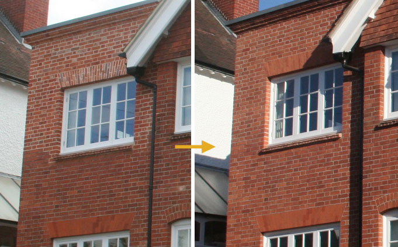
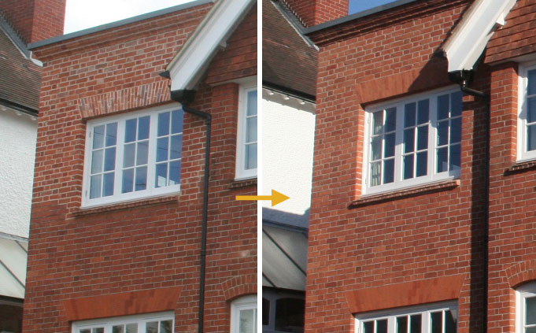

Examples of our brick tinting
Far too often the wrong bricks are selected for extension works. The photos below demonstrate that even in extreme cases, corrections can be made.
Far too often the wrong bricks are selected for extension works. The photos below demonstrate that even in extreme cases, corrections can be made.
